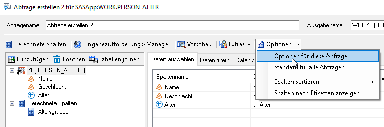
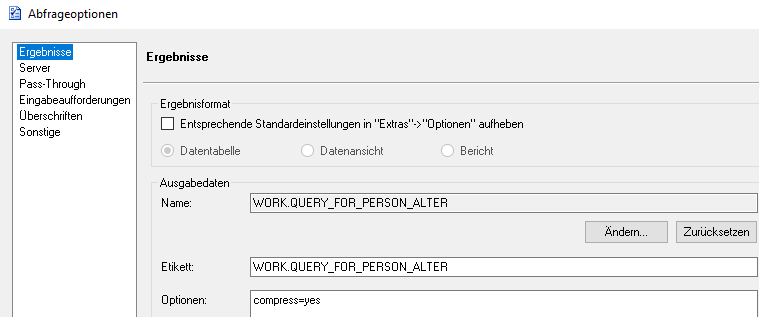

Umgang mit grossen Datenmengen
Bei der Arbeit mit sehr grossen Datenmengen kann es zu Ressourcen- bzw. Speicherproblemen kommen. Um dem entgegenzuwirken gibt es einige einfache Möglichkeiten.
Output komprimieren
Abfragen im SAS Enterprise Guide können um diverse Optionen ergänzt werden:
Optionen -> Optionen für diese Abfrage -> Ergebnisse

Im Feld Optionen: kann SQL-Code eingegeben werden. In diesem Fall compress=yes. Dies führt dazu, dass der Output der Abfrage komprimiert wird und weniger Speicherplatz auf dem SAS-Server in Anspruch nimmt. Zudem sollte die Abfrage so auch schneller durchlaufen.

Löschen mit PROC DATASETS
Nicht mehr benötigte Datensätze brauchen unnötig Speicherplatz im WORK-Verzeichnis und sollten deshalb gelöscht werden. Zum Beispiel: Wenn mehrere Datensätze durch einen Merge zu einem neuen Datensatz zusammengefügt werden, können nach dem Merge die ursprünglichen Datensätze gelöscht werden.
proc datasets lib=work;
delete dataset1 dataset2 dataset3;
run;
Dieser Ansatz ist eher für SAS-Projekte mit Programmierung geeignet, kann aber theoretisch auch mit vordefinierten Abfragen und Anwendungsroutinen des SAS Enterprise Guide kombiniert werden. Dazu einfach den Code in ein Programm schreiben, rechter Mausklick auf den zu löschenden Datensatz und «Verknüpfen mit» und das Programm mit dem Proc Datasets-Statement auswählen.

Effiziente Sortierung
Das Sortieren von Datensätzen kann vor allem bei grossen Datensätzen sehr ressourcenintensiv sein. Es gibt zwei Ansätze um sowohl Zeit als auch Speicherplatz einzusparen.
Das Proc Sort-Statement um die Option TAGSORT ergänzen:
proc sort data=person tagsort;
by alter;
run;
Wenn nur ein Subset eines Datensatzes sortiert werden soll, wird das oft in zwei Schritten gemacht:
data person_f (where=(geschlecht="F"));
set person;
run;proc sort data=person_f out=person_f_sorted;
by alter;
run;
Ein Kombinieren dieser beiden Schritte spart sowohl Zeit als auch Speicherplatz:
proc sort data=person (where=(geschlecht="F")) out=person_f_sorted;
by alter;
run;
Export mittels Data Step
Um einen Datensatz aus SAS in ein externes File zu exportieren, wird oft ODS und ein Proc Print-Statement verwendet. Ist der Datensatz allerdings sehr gross, dann kann das extrem lange dauern. In diesem Fall bietet sich unter Umständen ein Export mittels Data Step und PUT-Statement an:
data _null_;
set table1;
file="< Pfad >\Dateiname.csv" encoding="UTF-8" dlm=";";
if _n_=1 then put "Name;Geschlecht;Merkmal;Wert";
put Name Geschlecht Merkmal Wert;
run;
dlm: Bestimmt das Trennzeichen zwischen den Datenreihen, in diesem Fall ein Semikolon.if _n_=1: Der Nachteil dieser Methode ist, dass die Spaltennamen nicht exportiert werden, sondern nur die Daten. Deshalb muss die erste Zeile mit den Spaltennamen manuell hinzugefügt werden. Wichtig ist es, die Spaltennamen mit dem korrekten Trennzeichen getrennt aneinanderzuhängen und in Anführungszeichen zu setzen.put: Hier werden alle Variablen erfasst, die exportiert werden sollen.